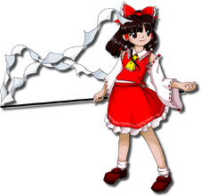

Título: Touhou Juouen ~ Unfinished Dream of All Living Ghost
Desenvolvedora: Team Shanghai Alice
Criador: ZUN
Data de lançamento: 13 de agosto de 2023
Plataforma: PC (Windows)
Gênero: Shoot 'em up (danmaku / bullet hell / versus)
Descrição:
Touhou 19 é o décimo nono jogo principal da série Touhou.
O jogo segue o estilo de batalhas competitivas semelhante a
Touhou 9, onde dois personagens lutam simultaneamente
enviando ataques um contra o outro.
A história envolve espíritos misteriosos que começam a
aparecer em grande número por Gensokyo.
Um grande número de espíritos começa a surgir por toda Gensokyo, criando confusão entre humanos e youkais. O fenômeno parece estar ligado ao mundo dos mortos e a entidades espirituais desconhecidas.
Diversos personagens decidem investigar o incidente, enfrentando uns aos outros enquanto tentam descobrir a origem do problema.
Durante os acontecimentos, surge a presença de entidades ligadas ao reino espiritual e às leis da vida e da morte.
O incidente acaba revelando conflitos e disputas entre diferentes forças que controlam os espíritos, levando a várias batalhas intensas entre os habitantes de Gensokyo.
O jogo mantém o estilo competitivo de danmaku, onde derrotar inimigos envia ataques extras para o oponente, criando partidas rápidas e estratégicas.
Reimu Hakurei (sacerdotisa do Santuário Hakurei)
Marisa Kirisame (maga humana)
Sanae Kochiya (sacerdotisa do Santuário Moriya)
Youmu Konpaku (jardineira do Submundo)
Cirno (fada do gelo)
O jogo apresenta vários personagens jogáveis, cada um com padrões de ataque únicos e habilidades diferentes durante as batalhas competitivas.
